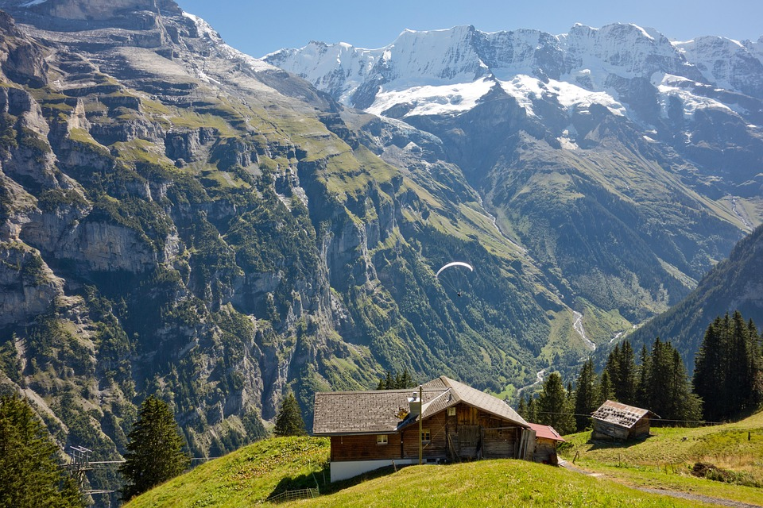
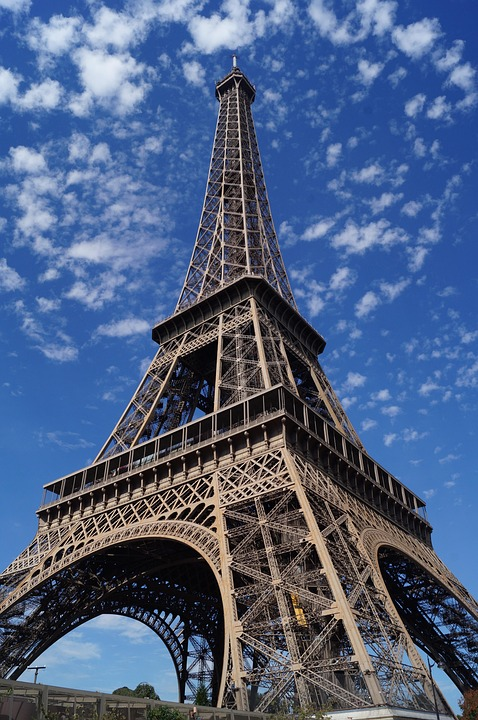

My favorite hobby is traveling. I love visiting new places around the world, and I've yet to explore so many countries. Each country is unique in their own way, and that's what makes this world so diverse and thrilling.
 Above is a picture of two places I would like to travel to this summer. The picture on the left is an image of Switzerland, and the picture to the right is an image of France. Both of these countries' sites are breathtaking, and hundreds of thousands of toursits come each year to visit these places.
Below is a list of the places I would most like to visit:
3 years ago I travelled to Lebanon. It was one of the most exciting vacations I've ever had. To start off, I got to meet my big family, and I was introduced to so many new and unique foods. I got to travel to so many different cities, one of them being the largest city, Beirut. I loved travelling to Lebanon, because everyone was very kind and respectful to one another.